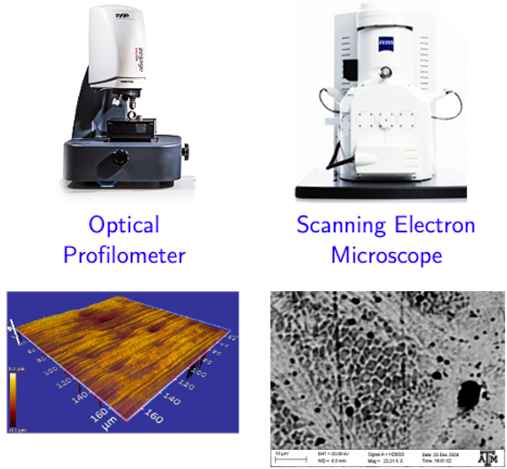
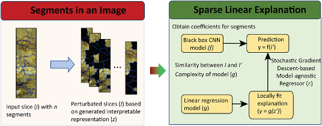
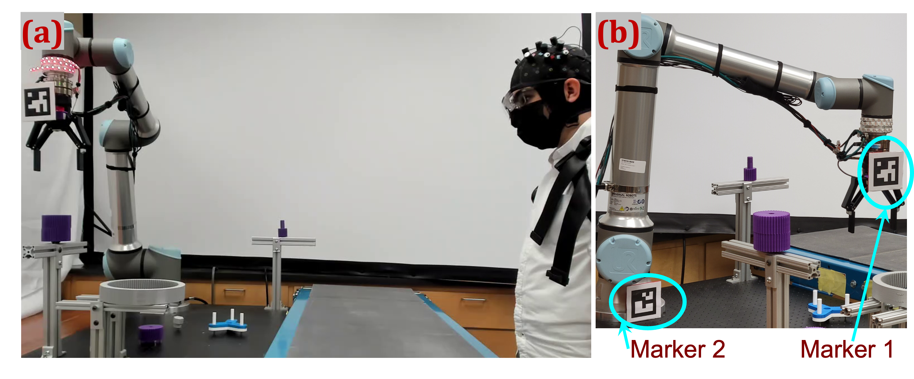
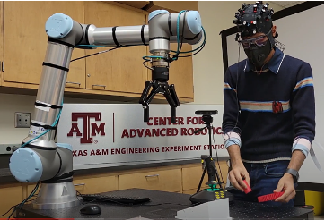
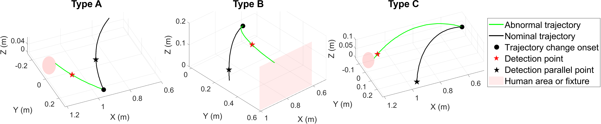
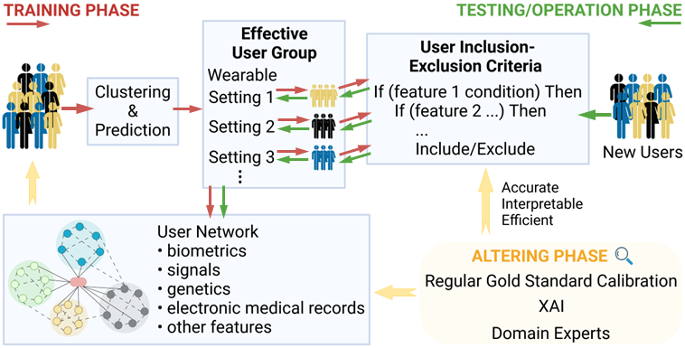

<body style="background-color: #fffbf6;">
<style>
    h1 {
      display: none;
    }
    
     h2 {
    border-bottom: 2px solid #681313 !important; /* Creates the line */
  }

    .lab-name {
    font-size: 16px;
    font-weight: bold;
    color: #861F41;  /* VT Maroon */
  }

    .topic-name {
      font-size: 19px;
    }
  </style>

<!-- Header -->
<header style="display: flex; justify-content: space-between; align-items: center; padding: 0px 0px;">
  <!-- University Logo on the left -->
  <div style="display: flex; align-items: center;">
      <!-- University Logo -->
      
      
      <!-- Lab Name -->
      <div class="lab-name">
          Human-centric AI & Smart Manufacturing Lab <br> at Virginia Tech
      </div>
  </div>

  <!-- Navigation Links on the right -->
  <nav>
    <ul style="list-style-type: none; margin: 0; padding: 0; display: flex; justify-content: center; gap: 20px;">
        <li><a href="/index.html" style="text-decoration: none; color: none;"></a></li>  
        <li><a href="/index.html" style="text-decoration: none; color: #861F41;">Home</a></li>
        <li><a href="/news/" style="text-decoration: none; color: #861F41;">News</a></li>
        <li><a href="/research/" style="text-decoration: none; color: #861F41;"><strong>Research</strong></a></li>
        <!-- <li><a href="https://scholar.google.com/citations?user=RsfD6hMAAAAJ&hl=en" target="_blank" rel="noopener noreferrer" style="text-decoration: none; color: #520d0d;">Publications</a></li> -->
        <!-- <li><a href="/awards/" style="text-decoration: none; color: #520d0d;">Awards</a></li> -->
         <li><a href="/people/" style="text-decoration: none; color: #861F41;">Team</a></li>
        <li><a href="/teaching/" style="text-decoration: none; color: #861F41;">Teaching</a></li>
        <!-- <li><a href="/blogs/" style="text-decoration: none; color: #520d0d;">Blogs</a></li> -->
        <!-- <li><a href="https://www.overleaf.com/read/ftksccpbdsbb#d980c4" target="_blank" rel="noopener noreferrer" style="text-decoration: none; color: #520d0d;">CV</a></li>  -->
    </ul>
  </nav>
</header>

<h2 style="font-size: 29px;">Research Projects</h2>

<p style="font-size: 18px">
<ul style="font-size: 18px">
  <li> Explainable AI Methodology </li>
  <div>
    
    <br>
    <a href="https://arxiv.org/abs/2305.00213" target="_blank" rel="noopener noreferrer">
    
    </a>
  </div>
  <li> Process-structure-property (PSP) knowledge discovery  </li>
  <li> Anomaly detection and prognostics  </li>
  <li> Human-robot collaboration </li>
</ul>
</p>


<p class="topic-name">
    Explainable AI for Smart Manufacturing
</p>
<div>
    <a href="https://www.tandfonline.com/doi/abs/10.1080/24725854.2022.2100050" target="_blank" rel="noopener noreferrer">
    
    </a>
    <br>
    <a href="https://arxiv.org/abs/2305.00213" target="_blank" rel="noopener noreferrer">
    
    </a>
</div>


<!-- <div style="display: flex;">
  <p class="topic-name">
    Explainable AI for Smart Manufacturing
  </p>
  
  
</div>

<div>
  <p class="topic-name">
    Quality and Safety Assurance in Human-robot Collabotive Manufacturing Systems
    
    
    
  </p>

  <p class="topic-name">
    AI-driven Smart Health and Wellness
    
    
  </p>
  
</div> -->


</body>